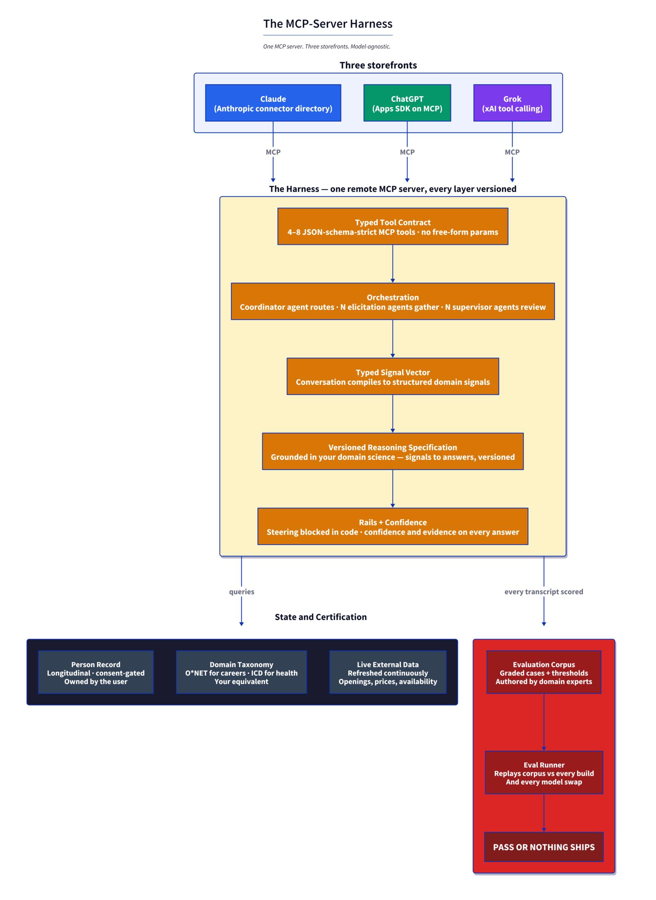

See the pattern before you buy it. The MCP-Server Playbook ships the exact architecture already running at github.com/tounsils/ask-me-mcp, a public MIT-licensed reference implementation. Install it in Claude Desktop or Claude Code and interact with the pattern during our discovery call: six typed tools, a coordinator, rails and confidence scoring, external grounding, an evaluation corpus and a certification gate. Every element of the pattern is visible in the source.
Live endpoint: https://ask-me-mcp-xi.vercel.app/api/mcp
Product 1: MCP-Server Product Playbook
Your product ships as a remote MCP server in Anthropic's connector directory, ChatGPT's Apps SDK, and via xAI's tool-calling API. One MCP server. Three storefronts. Same code.
What you get in 6 weeks
- Typed tool contract. Four to eight JSON-schema-strict MCP tools. No free-form params, no prompt-engineering surface area.
- Coordinator and specialist agent architecture. The coordinator routes, elicitation agents gather, supervisor agents review before the response goes out.
- Signal-extraction pipeline. Every conversation compiles to a typed signal vector. Structured, versioned, inspectable.
- Versioned reasoning specification. Grounded in your domain science, not the model's guesses. Whatever framework governs your field, we ship it as spec.
- Rails and confidence-per-answer discipline. Steering blocked in code. Every response ships with a confidence level and its evidence.
- Grounding architecture. The harness queries your data sources, external APIs, and reference taxonomies. The model never invents.
- Evaluation corpus, eval runner, per-model-pairing certification. You author the corpus with my guidance. I ship the runner and the gate. Pass or nothing ships.
- Remote MCP server deployment. Production endpoint, auth, observability, and the connector-directory listing paperwork.
- One passing eval on your production tool contract by week 6.
Week by week
| Week | Deliverable | Gate |
|---|---|---|
| 1 | Product definition, candidate tool list, input/output schemas, architecture map | You validate the target user flow and the tool contract. No tool contract without schema review. |
| 2 | Grounding sources identified, confidence and refusal policy in code, first versioned reasoning spec | Domain science is explicitly encoded, not left implicit. Critical edge cases documented. |
| 3 | Coordinator routes, specialist workers, handoff behavior, first evaluator pass | Tool routing is inspectable and deterministic. The system can explain which path it used. |
| 4 | Evaluation corpus, eval runner, documented failure cases and known gaps | Every core tool has a smoke eval and a failure case. You confirm behavior matches product intent. |
| 5 | Auth, deployment, observability, production logging, final fallback logic | A deployable remote MCP endpoint exists. Critical failure modes are handled and visible. |
| 6 | End-to-end smoke tests, final eval pass, connector-directory launch checklist, handoff notes | One passing eval on the final production tool contract, or the refund trigger fires. |
Not in scope
- Your domain implementation. That is your product, the tools call it.
- UI beyond a debug console.
- Marketing, growth, or go-to-market. That is what the retainer is for.
- Fundraise deck work.
Refund trigger
- No live tool contract on the target remote MCP setup.
- No working eval runner or validation gate.
- No production-ready grounding architecture.
- No deployable path to the connector directory.
Failure to reach the shipping state by end of week 6 is failed delivery, not a soft "almost shipped."
Who this is for
Pre-seed to Series A founders who have already decided that going deep on one AI-assistant platform beats building yet another web app. You value defensibility from external certification, not just "we use Claude."
Who this is not for
- Teams that want a chatbot with a retrieval tab.
- Teams without a real domain to encode. The harness is only defensible if you have field science underneath.
- Teams that cannot commit an engineer or PM to the sprint. This is not turnkey.
Cap: one active Playbook engagement at a time. When at capacity, waitlist only.
The architecture you are buying

Product 2: Fractional CTO Retainer
For founders who complete the Playbook and want to keep going, or who need the architecture-adult role without the MCP-shipping wedge.
What you get
- Weekly 60-minute strategy call. Architecture, hiring, vendor selection, risk calls. Recorded. Notes shared same day.
- Monthly written architecture review. Three to five pages on a specific system, with concrete recommendations. Not a slide deck.
- Slack on-call for critical decisions. Same-day response Monday to Friday for decisions blocking your team. Not "can you look at this PR."
- Access to the reusable-patterns library. Twelve documented engineering patterns built across the engagements below. Drop them into your codebase, no attribution required.
- First 90 days deliverable. A yes-or-no verdict on your current architecture, a 12-month hiring roadmap, and the three vendor decisions you should make this quarter.
Explicitly not in scope
- Writing production code for you. Different service, different pricing.
- Attending your all-hands or investor updates. Available as an add-on at $500 per session.
- Managing your engineers day to day. You still need a lead engineer or head of engineering.
- Standing in as full-time CTO for a fundraise. Investors will see through it.
Cap: two active retainer clients at a time.
Pricing
| Product | Price | Term | Cap |
|---|---|---|---|
| MCP-Server Product Playbook | $12,000 fixed | 6 weeks | 1 active at a time |
| Fractional CTO Retainer | $3,500 / month | Month to month | 2 active at a time |
| Investor or all-hands session | $500 / session | Per session | Add-on |
Combined ceiling: one Playbook plus one Retainer, or two Retainers, or two back-to-back Playbooks. Never two concurrent Playbooks. I would rather turn work away than deliver two sprints badly.
The proof: current engagements
NXT Robotics: RobotogoAI operator platform
Senior Software Engineer, fractional 60%, 2025 to present.
Build RobotogoAI, the operator SaaS console and agent layer that turns raw device telemetry (video, GPS, battery, BLE beacons) into actionable ops decisions for physical-security and field-equipment fleets: stadium venues including ACE / Snapdragon Stadium and Petco Park, EV-charging networks, drone operators, and a 300+ site parking pilot.
Own five sub-modules across the platform: a React 19 operator console (Vite, Ant Design, Redux Toolkit, Saga), a Laravel 12 / PHP 8.3 API with Passport auth, a Python and AWS SAM per-tenant deployment pipeline, a Node 20 executive cockpit on Lambda with Aurora Serverless v2 and Cognito, and a dual-audience knowledge repository read by both humans and coding agents.
Recent ships: an end-to-end alerts UI with severity taxonomy and deep-linking, an iOS video playback fix, BLE beacon CRUD, a battery-low threshold service, a telemetry retention pipeline, a Cognito SRP auth migration, and an admin team-management route with invite flow.
AIMIA: AI career and AI-literacy assessment
VP of Engineering, advisory, 2025 to present.
Own the entire engineering surface for a career-guidance harness serving students, young professionals, and adult learners. Institutional partners include Irvine Valley College, MIT, Palomar College, and Mission Edge.
Architected a multi-agent stack (six specialized agents plus a supervisor synthesizer), bidirectional voice over WebSocket with a fallback provider, multilingual output in English, Traditional Chinese, and Spanish, application-layer AES-256-GCM field encryption with an HMAC-SHA256 blind index for email dedupe, and a length-bias anti-cheat detector. Currently leading a container-platform migration between two major clouds.
Hydrostasis: Retool admin portal with a Test to Prod promotion pipeline
Part-time engagement (~20%), summer 2026. Phase 1 in production, phase 2 in flight.
Wrote promote.js, a scripted Test to Prod promotion workflow for Retool app definitions that makes deployments diff-reviewable and reversible instead of manual copy-paste, which is the Retool default and a common source of production breakage. A modern Vite, TanStack Router, TanStack Query, and Radix UI stack layered over Retool's admin primitives.
The reusable-patterns library
Twelve patterns worth stealing, built across the engagements above. Retainer clients get access plus a walkthrough on the ones relevant to their stack. Selected examples:
- The Harness pattern. MCP-server product architecture on rented intelligence: typed tools, coordinator, signal vector, versioned reasoning spec, evaluation-corpus certification gate. The same pattern the Playbook delivers.
- Test to Prod diff review for low-code platforms. For Retool, Bubble, Airtable, or anywhere "publish" is a blackbox mutation.
- Dual-audience knowledge repository. Structured frontmatter plus architecture decision records, read by both humans and coding agents.
- AES-256-GCM field encryption with an HMAC blind index. Encrypted PII that still dedupes and indexes.
- Length-bias anti-cheat detector. Retry when the model writes systematically longer correct answers than distractors.
- Live model discovery and smoke-test switcher. Enumerate models at runtime, smoke-test each, swap the default without a deploy.
Full list on request.
How to book
First 30 minutes are free. A fit check, and an honest answer on whether either product actually solves your problem. If neither does, I will say so.